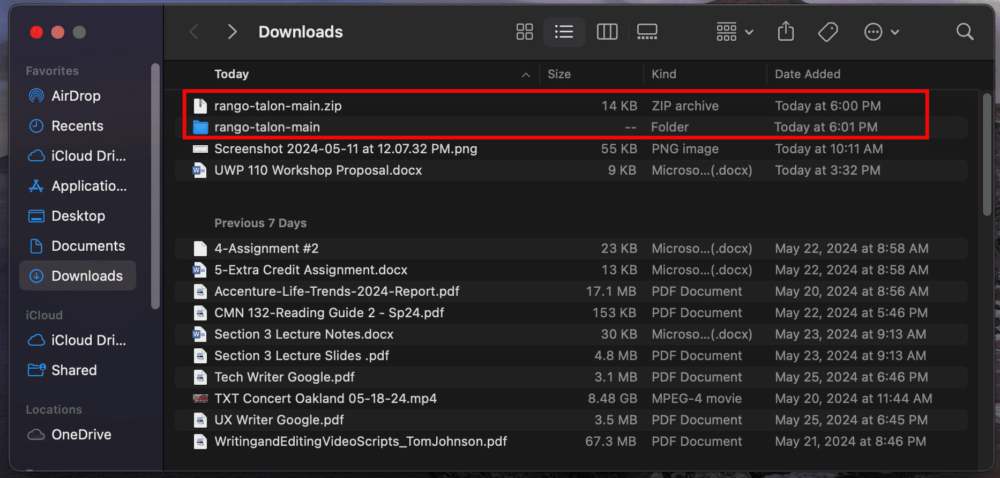
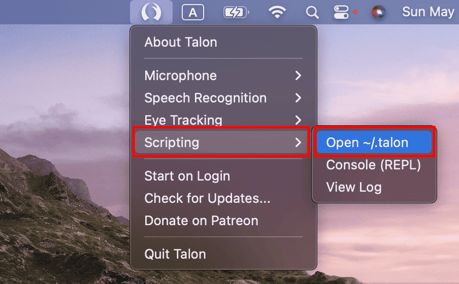
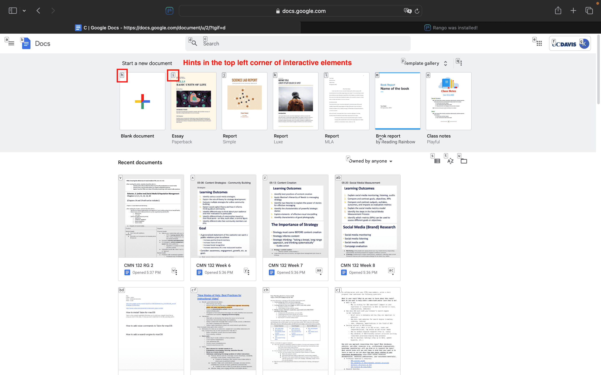

Rango is a browser extension that helps you interact with webpages using your voice and Talon. This process should take 5 minutes.
Before you can use Rango with your voice, make sure to install the Talon application, voice command files, and a speech recognition engine.Rango displays a combination of letters, called hints, in the top left corner of interactive elements on your webpage. When hints are spoken using Talon, you can interact with your webpage to click, hover, scroll, switch tabs, and more.
Learn how to download the Talon user file set for Rango, and then the Rango browser extension:
Once the download has completed, open Finder, go to Downloads, and double-click on the rango-talon-main.zip to extract the Talon user file set for Rango.

Once extraction has completed, a rango-talon-main folder will appear in your Downloads. Keep your Downloads open because you will need this folder later.
Open Finder, go to Applications, and click on the Talon application.
Once the application has launched, click on the Talon icon at the top of your screen in the menu bar.
In the drop-down menu, go to Scripting and click Open ~/.talon.

In the .talon folder, drag the rango-talon-main folder from your Downloads into the user sub-folder.
Once Rango is downloaded, a web browser tab with instructions for using Rango with Talon will open. Please read it carefully.
Note: All web browsers except Safari will automatically enable Rango upon download. To manually enable Rango for Safari, review How do I enable Rango for Safari?
Congratulations, you have set up Rango for Talon! With Rango enabled, you will see hints on your webpage that you can interact with by voice!

For additional help and information on using Rango with Talon, check out the following resources: